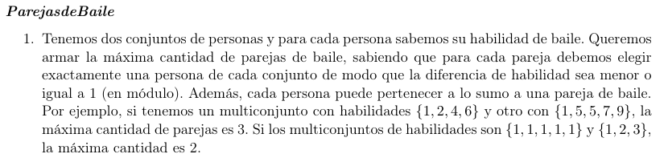
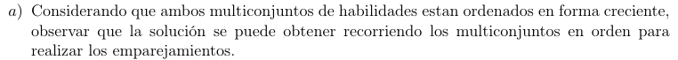

\(✓\)
public static int ParejasDeBaile(List<Integer> S, List<Integer> R) {
int n = S.size();
int res = 0;
int j = 0;
for (int k = 0; k < n && j < R.size(); k++) {
if (Math.abs(S.get(k)-R.get(j)) <= 1) {
j++;
res++;
}
}
return res;
}Sean \(S,R\) los conjuntos ordenados de personas, \(n = |S|\)
El algoritmo se reduce a recorrer \(S,R\) hasta \(S_{n}\) o \(j = |R|\), donde el \(i\)-ésimo paso decide si tenemos o no una pareja de baile.
La complejidad es trivialmente \(O\left( |S| + |R| \right)\) temporal, y \(O(1)\) espacial.

Tenemos los multiconjuntos ordenados de personas
\[S = \left\{ s_{1},\ldots,s_{n} \right\}\]
\[R = \left\{ r_{1},\ldots,r_{m} \right\}\]
Nuestra solución greedy \(G\), y una solución óptima \(O\), tal que nuestra solución toma una pareja como válida si y solo si la diferencia del módulo es menor o igual a 1, o sea:
\[\left( s_{i},r_{j} \right) \Longleftrightarrow |s_{i} - r_{j}| \leq 1\]
Vemos que \(G\) no puede ser mejor que \(O\) (absurdo), nos alcanza con probar que \(G\) no es peor que \(O\), de tal forma que sea igual de óptima que \(O\).
\[G = \left\{ \left( s_{1},r_{1} \right)\ldots\left( s_{h},r_{h} \right) \right\}\]
\[O = \left\{ \left( s'_{1},r'_{1} \right)\ldots\left( s'_{h},r'_{h} \right) \right\}\]
Por inducción fuerte
Hipótesis inductiva: Asumimos que existe solución óptima \(O'\), con \(O'_{j} = G_{j},\forall k \geq j \geq 1\)
Caso base
Si \(k = 0\), \(\left( |O'| = |O| = 0 \right) \Rightarrow O' = O\)
Paso recursivo
Queremos probar que \(k \rightarrow k + 1\), o sea, \(G_{k + 1} = \left( s_{k + 1},r_{k + 1} \right)\)
Hasta ahora tenemos que \(\left\{ \left( s_{i},r_{i} \right),\ldots,\left( s_{i},r_{i} \right) \right\}\) son los primeros \(i\) elementos de \(O'\) (o sea, los mismos que en \(G\))
Y queremos ver qué pasa en \(k + 1\)
Vemos \(O\):
Si \(\left( s_{k + 1},r_{k + 1} \right) \in O\) ya constituye una solución óptima.
Caso contrario, tenemos 2 chances:
\(\left( s_{k + 1},r' \right)\) con \(r' > r_{k + 1}\)
\(\left( s',r_{k + 1} \right)\) con \(s' > s_{k + 1}\)
Queremos ver que pasa si intercambiamos (1) o (2) por \(\left( s_{k + 1},r_{k + 1} \right)\) en \(O'\)
Caso 1
\(\left( s_{k + 1},r' \right)\) por \(\left( s_{k + 1},r_{k + 1} \right)\) :
Por \(G\) sabemos que \(\left( s_{k + 1},r_{k + 1} \right)\) es pareja válida, luego \(r'\) queda sin elegir, y como \(r' > r_{k + 1}\) podrá ser elegida por un \(s_{p},p > k + 1\) en pasos siguientes, por lo que el número de parejas válidas se mantiene igual. \(|O'_{k + 1}| = |G_{k + 1}|\)
Caso 2
\(\left( s',r_{k + 1} \right)\) por \(\left( s_{k + 1},r_{k + 1} \right)\) :
\(G\) se empareja \(s_{k + 1},r_{k + 1}\) si vale \(|s_{k + 1},r_{k + 1}| \leq 1\)
Y tenemos que si \(\left( s',r_{k + 1} \right) \in O'\) entonces \(s' > s_{k + 1}\), y \(S\) está ordenado, notamos que entonces \(|s' - r_{k + 1}| > |s_{k + 1} - r_{k + 1}|\) y la única chance de que \(G\) no haya emparejado \(s_{k + 1},r_{k + 1}\) es que \(|s_{k + 1} - r_{k + 1}| > 1\), por lo que no es válido.
Por lo tanto: \(\forall O::\exists O'\text{ óptima tal que }G_{k} \subseteq O' \Longrightarrow G\text{ es óptima.}\)